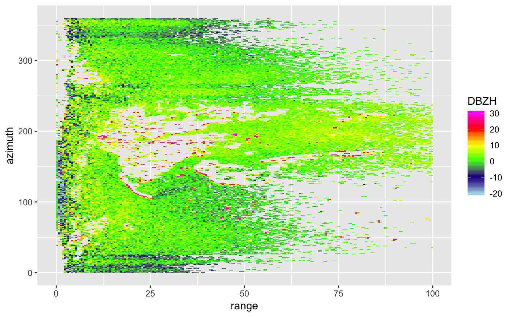
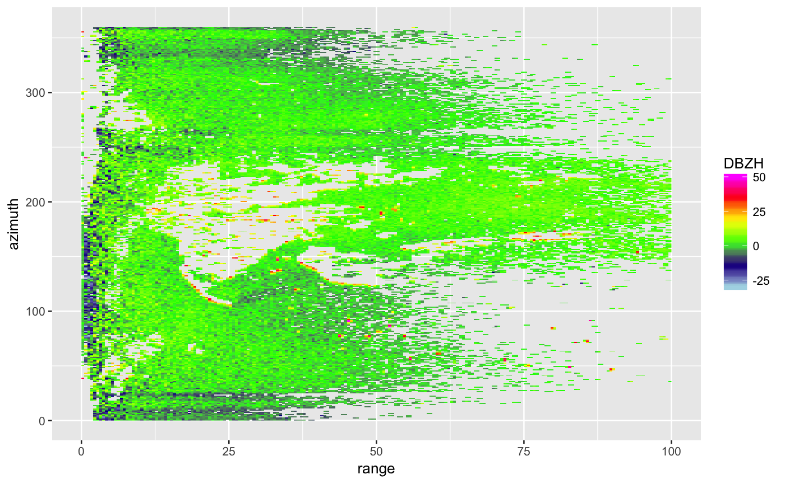

Plots a scan in polar coordinates. For plots in Cartesian coordinates, see ppi
# S3 method for scan plot(x, param, xlim = c(0, 100), ylim = c(0, 360), zlim = c(-20, 20), ...)
| x | An object of class |
|---|---|
| param | The scan parameter to plot, see details below. |
| xlim | Range of x (range, distance from radar) values to plot. |
| ylim | Range of y (azimuth) values to plot. |
| zlim | The range of parameter values to plot. |
| ... | Arguments passed to low level ggplot function. |
Available scan parameters for plotting can by printed to screen
by summary(x). Commonly available parameters are:
DBZH", "DBZ"(Logged) reflectivity factor [dBZ]
VRADH", "VRAD"Radial velocity [m/s]. Radial velocities towards the radar are negative, while radial velocities away from the radar are positive
RHOHV"Correlation coefficient [unitless]. Correlation between vertically polarized and horizontally polarized reflectivity factor
PHIDP"Differential phase [degrees]
ZDR"(Logged) differential reflectivity [dB]
The scan parameters are named according to the OPERA data information model (ODIM), see Table 16 in the ODIM specification.
# load an example scan: data(example_scan) # print to screen the available scan parameters summary(example_scan)#> Polar scan (class scan) #> #> parameters: VRADH DBZH ZDR RHOHV PHIDP #> elevation angle: 0.5 deg #> dims: 480 bins x 360 rays# make ppi for the scan # plot the reflectivity param: plot(example_scan, param = "DBZH")#> Warning: Removed 1694 rows containing missing values (geom_raster).# change the range of reflectivities to plot to -30 to 50 dBZ: plot(example_scan, param = "DBZH", zlim = c(-30, 50))#> Warning: Removed 1694 rows containing missing values (geom_raster).